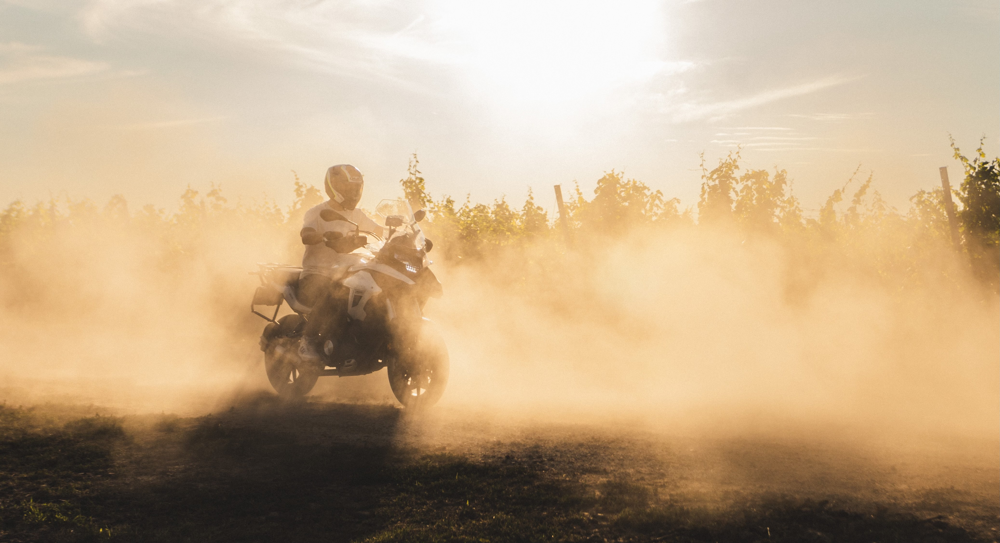
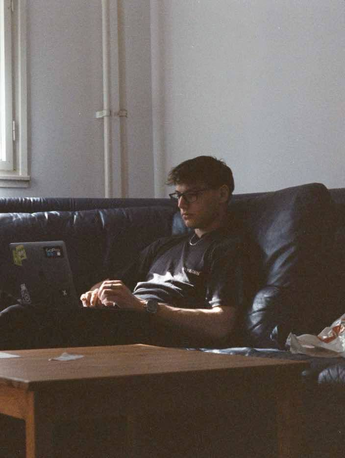

Budapest, éjjel“Kevesebb sablon, több gondolkodás. Minden kép egyedi megközelítést kap.”
Az autók és motorok kiskorom óta a szenvedélyeim. Amikor később egy kamera is a kezembe került, onnantól tudtam, hogy ezzel szeretnék foglalkozni — nem hobbiként, nem mellékesen, hanem teljes elhivatottsággal.
A szerkesztés során képes vagyok órákat tölteni egyetlen részlettel, mert pontosan tudom, mi a különbség a jó kép és az emlékezetes kép között. Nem dolgozom presetek és sablonok alapján — minden anyag egyedi megközelítést kap.
Napi szinten dolgozom Lightroom-ban, Premiere Pro-ban és After Effects-ben. A szerkesztés ugyanolyan szenvedélyem, mint maga a fotózás — addig nem állok meg, amíg a kép nem mutatja azt, amit én éreztem a helyszínen.
